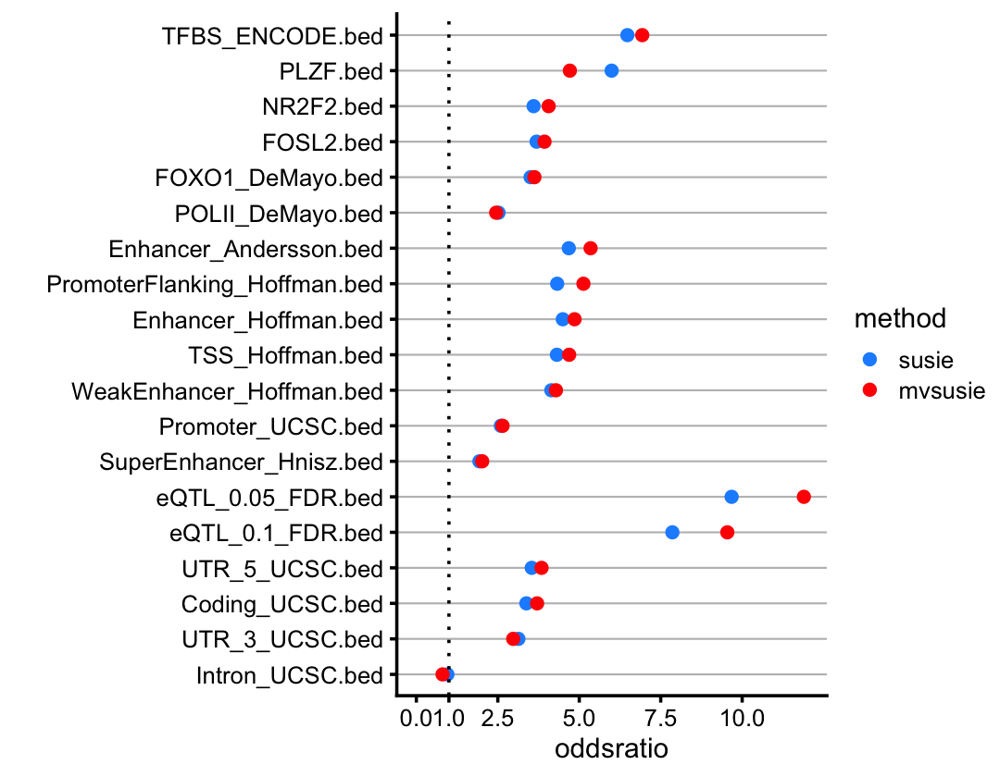
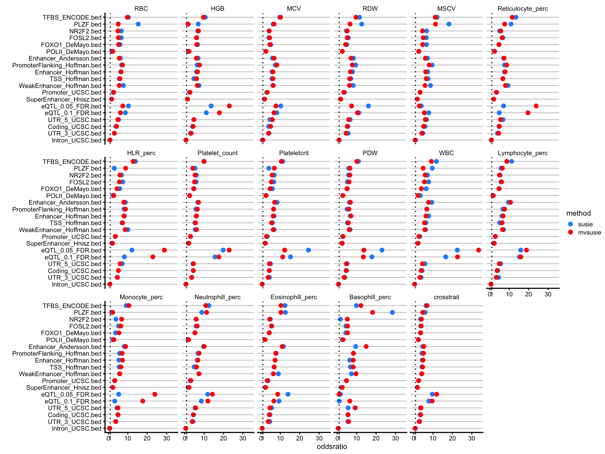

Here we generate some plots for the paper from the GREGOR functional enrichment analysis performed here.
Load the packages used in this analysis.
library(ggplot2)
library(cowplot)These are the blood cell traits.
traits <- c("RBC","HGB","MCV","RDW","MSCV", # mature red blood cell
"Reticulocyte_perc","HLR_perc", # immature red blood cell
"Platelet_count","Plateletcrit","PDW", # platelet
"WBC","Lymphocyte_perc","Monocyte_perc", # white blood cell
"Neutrophill_perc","Eosinophill_perc","Basophill_perc",
"crosstrait")These are the SNP annotations we will show the enrichment results for.
annotations <- list(
"transcription factor binding sites" =
c("TFBS_ENCODE.bed","FOSL2.bed","FOXO1_DeMayo.bed",
"NR2F2.bed","PLZF.bed","POLII_DeMayo.bed"),
"enhancer promoter regions" =
c("Enhancer_Andersson.bed","Enhancer_Hoffman.bed",
"PromoterFlanking_Hoffman.bed","Promoter_UCSC.bed",
"SuperEnhancer_Hnisz.bed","TSS_Hoffman.bed",
"WeakEnhancer_Hoffman.bed"),
"eqtls data" =
c("eQTL_0.05_FDR.bed","eQTL_0.1_FDR.bed"),
"genomic structural elements" =
c("Coding_UCSC.bed","Intron_UCSC.bed","UTR_3_UCSC.bed","UTR_5_UCSC.bed"))Import the SuSiE-based and mvSuSiE-based enrichment results from the files and combine into a single data frame.
odds_ratios <- NULL
for (trait in traits) {
susie_file <- paste("../output/blood_cell_traits/gregor/SuSiE",trait,
"positive_cs.index_gregor_output_StatisticSummaryFile",
"fisher.txt",sep = "_")
mvsusie_file <- paste("../output/blood_cell_traits/gregor/mvSuSiE",trait,
"positive_cs.index_gregor_output_StatisticSummaryFile",
"fisher.txt",sep = "_")
susie <- read.table(susie_file,sep = " ",header = TRUE,
stringsAsFactors = FALSE)
mvsusie <- read.table(mvsusie_file,sep = " ",header = TRUE,
stringsAsFactors = FALSE)
odds_ratios <-
rbind(odds_ratios,
data.frame(bed = susie$Bed_File,
trait = trait,
method = "susie",
oddsratio = susie$odds,
stringsAsFactors = FALSE),
data.frame(bed = mvsusie$Bed_File,
trait = trait,
method = "mvsusie",
oddsratio = mvsusie$odds,
stringsAsFactors = FALSE))
}Prepare the data frame for ggplot2.
n <- length(annotations)
for (i in 1:n) {
x <- subset(odds_ratios,
method == "mvsusie" &
trait == "crosstrait" &
is.element(bed,annotations[[i]]))
rows <- order(x$oddsratio,decreasing = TRUE)
annotations[[i]] <- x[rows,"bed"]
}
annotations <- unlist(annotations)
odds_ratios <- subset(odds_ratios,is.element(bed,annotations))
odds_ratios <- transform(odds_ratios,
bed = factor(bed,rev(annotations)),
trait = factor(trait,traits),
method = factor(method,c("susie","mvsusie")))This first plot shows the “cross-trait” SuSiE and mvSuSiE enrichment results:
p1 <- ggplot(subset(odds_ratios,trait == "crosstrait"),
aes(x = oddsratio,y = bed,color = method)) +
geom_point() +
scale_color_manual(values = c("dodgerblue","red")) +
labs(y = "") +
theme_cowplot(font_size = 9) +
theme(panel.grid.major.y = element_line(color = "gray",size = 0.3))
p1
Next we show the enrichment results for all traits:
p2 <- ggplot(odds_ratios,aes(x = oddsratio,y = bed,color = method)) +
geom_point() +
scale_color_manual(values = c("dodgerblue","red")) +
labs(y = "") +
theme_cowplot(font_size = 7) +
facet_wrap(vars(trait)) +
theme(strip.background = element_blank(),
panel.grid.major.y = element_line(color = "gray",size = 0.3))
p2